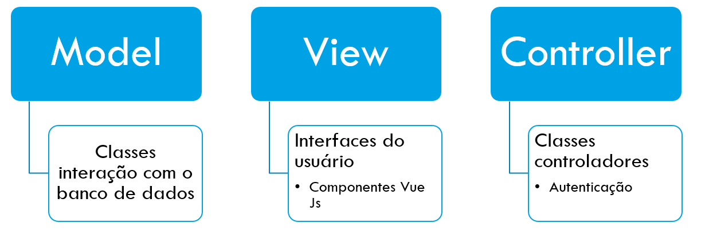
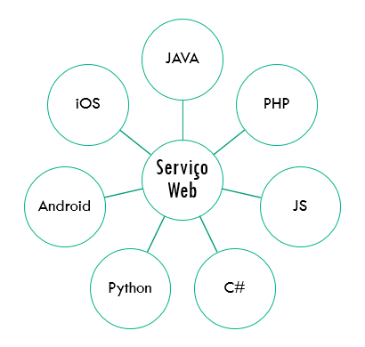

Sistema de Gestão patrimoial
Caso da Universidade Zambeze
Autor: Samuel Anastácio Bié
Orientador: Engº. Rui Miguel Inácio
Introdução
A administração ou gestão patrimonial é uma atividade que está baseada em ações que visam assegurar, por meio de registos e relatórios, a coleta de dados relativos a identificação, existência, quantificação, localização, condições de uso e histórico dos bens patrimoniais, desde a sua primeira inclusão no património, até a sua remoção (baixa final).
Introduçao
Este trabalho trata de um sistema de administração patrimonial a ser implantado na Direção de Construção Administração Patrimonial da Universidade Zambeze para a gestão patrimonial descentralizada no que diz respeito ao controle de bens patrimoniais sob a guarda e responsabilidade desta.
Processo de Gestão patrimonial
- Classificação
- Tombamento
- Cadastro
- Inventário
- Movimentação
- Transferências
- Abate
Classificação
Quanto a natureza são classificados como móveis e imóveis.
Quanto ao tempo de utilização temos património de consumo e
património permanente.
Tombamento e cadastro
Tombamento é o processo de inclusão (entrada) de um bem permanente no sistema universitário, trata-se do registro e a identificação de móveis e imóveis, bem como de todas as anotações de estoque.
O cadastro é o registro de bens que compõem o domínio público do estado, especificando suas características físicas, valor financeiro e localização para posterior avaliação, através do preenchimento da ficha de cadastro.
Inventário
Inicial: realizado quando da criação de uma unidade gestora, para identificação e registro dos bens sob sua responsabilidade;
Anual: que é realizado a medida que são adquiridos novos bens pela instituição, e também a fim de manter atualizados os registos dos bens patrimoniais, bem como a responsabilidade dos setores onde se localizam tais bens, mediante verificações físicas.
Geral: que é feito quinquenalmente, e é neste momento que são acomodados casos de remoção dos bens no sistema.
Movimentações e Transferencias
Movimentação: consiste na saída de um bem de seu local de guarda para manutenção ou empréstimo, sem a correspondente troca de responsabilidade, sendo emitida a guia de saída.
Transferenia: constitui a mudança da responsabilidade pela guarda e conservação de um bem permanente
Abate
O abate consiste no ato administrativo de retirar do inventário ou do cadastro de um órgão ou instituição do Estado. Este processo tal como outros é realizado sobre determinadas condições previstas no decreto 42/2018 de 24 de Julho.
SISTAFE: SPE
| SISTAFE | Subsistema do Orçamento Estado |
| Subsistema da Contabilidade Pública | |
| Subsistema do Tesouro Público | |
| Subsistema do Património do Estado | |
| Subsistema do Controlo interno |
Justificativa
Problema
De quais formas o processo de administração patrimonial na Universidade Zambeze pode ser feito de forma descentralizada e independente?
Hipótese
A implementação de um sistema de informação para gestão patrimonial aberto, pode descentralizar e garantir independência ao gerenciamento do património a nível da Universidade.
Objectivos
Objectivo Geral
Propor uma aplicação web de gestão patrimonial.
Objectivos
Objectivos especificos
Conhecer a situação atual do processo de administração patrimonial usados atualmente na DCAP UniZambeze;
Desenhar conceitualmente e estruturalmente uma plataforma de administração patrimonial descentralizada de um ponto de vista de sistema.
Desenvolver um protótipo de um sistema de administração patrimonial que possa comunicar-se ao SISTAFE a outros sistemas.
Desenvolvimento do sistema
E Conceitos Fundamentais
Metodologias: Tecnologias utilizadas
| Lado do cliente | Lado do servidor |
|---|---|
| Vue JS | Apache 2.0 |
| HTML | PHP |
| CSS | MySql |
| JavaScript | Laravel |
| REDIS e Memcached |
Padrão de Desenvolvimento Usado
Desenvolvimento de sistema usando frameworks
Framework são abstrações de software, nesse contexto abstrações são conceitos centrais desprovidos de complexidades e detalhes.
Atenção que:
Framework ≠ Bibliotecas
Frameworks são de grande benefício uma vez que ajudam a concentrar
esforços apenas em funcionalidades cruciais e não em conceitos já
pensados e desenvolvidos por outros programadores.
Modelo de processo de desenvolvimento
Modelo interativo incremental é ideal em situações nas quais os requisitos iniciais do software são razoavelmente bem definidos, entretanto, devido a natureza do trabalho de desenvolvimento torna inviável o seu desenvolvimento seguindo os parâmetros do desenvolvimento sequencial
UML
Linguagem de modelagem unificada é uma linguagem visual foi utilizada para auxiliar no desenvolvimento do software a definir características e seu funcionamento geral, criando padrões para compreensão genérica do processo.
Diagramas da UML
Diagrama de Distribuição
Este diagrama vai ajudar a enteder o mecanismo de funcionamento e acesso a informação, por parte dos utilizadores e dispositivos inetervenientes.
Diagrama de casos de uso
Diagramas de casos de uso buscam apresentar o sistema na
perspetiva do usuário , demonstrando as funcionalidades (casos de
uso) e os serviços oferecidos e quais usuários poderão usar cada
funcionalidade.
Diagramas de casos de uso são usados maioritariamente na modelagem
do sistema, durante o levantamento e análise de requisitos, sendo
possivelmente alterados a medida que se segue com a engenharia de
software, este também serve de base para outros diagramas.
Diagrama de pacotes para casos de uso
Hierarquia de atores
Subsistema do Usuario
Subsistema do Administrador Local
Subsistema do administrador universitário
Subsistema de gestão de relatórios
Subsistema de acesso externo
Classificação de requisitos
No que tange ao processo de coleta de requisitos este culminou com a classificação dos requisitos da forma disposta na tabela baixo.
| Requisitos De Usuário | Requisitos Funcionais | Requisitos Não Funcionais |
|---|---|---|
| 7 | 14 | 6 |
Diagrama de Classes
Diagrama de pacotes para Classes
Diagrama de Classes para o pacote dos modelos de património
Diagrama de Classes para o pacote dos modelos da universidade
Modelo de banco de dados
Modelo de organização universitaria
Modelo Nuclear do patrimônio
Modelo extendido do patrimônio
Modelo de operacoes
Modelo de gestão de requisições externas
Interconeção de sistemas
Baseados nos casos de uso e nos requisitos anteriorimente definidos e para este sistema a API foi desenvolvida de modo a executar essas ações, uma vez que há uma multiplicidade de funcionalidades que consumidores desta podem desejar é alcançar uma visão do usuário da API para entender o que deve ser feito com as bibliotecas da API, por que e como fazê-la.
API ouServiços web
Em um sentido mais generalista um serviço web é
uma coleção de padrões e protocolos abertos, usados para troca de
dados entra plataformas, ou seja, que pode ser acedido via chamada
de método por uma aplicação ou por algum outro componente de
software por meio de uma rede.
Esses recursos são maioritariamente implementados usando os
padroes SOAP e REST
Arquitetura basica de Serviços Web
Corpo de uma requisição a API
Exemplo para requisição de login
Envia-se uma requisição para a URI: https://dominio/oauth/login

Resposta a API

Interconeção ao SISTAFE
Para interconectar ao SISTAFE se usará o mecanismo de exportação e importação de dados. Essa mecanismo estará estabelecido via troca de ficheiros em formatos EXCEL, CSV e ou JSON

Segurança da aplicação
No que concerne a segurança da aplicação, será aplicada em ambiente de produção uma segurança em 5 camadas
CDN: Redes de Distribuição de conteudo.
TLS/SSL: Protocolos de segurança da camada de Aplicação(Modelo TCP/IP)
Token CSRF(Cross-Site Request Forgery): Mecanismo de verificação de entidades emissoras de pedidos HTTP
Credenciais: Email e Password
oAuth: Mecanismo de autenticação de aplicações e gestão de escopos de acesso.
Performance
Um ponto a se tomar em consideração no desenvolvimento de sistemas é a questão do tempo de resposta que sistema dá para as interações com usuário, pois “um sistema lento está fadado a morrer” nesse contexto foram avaliadas os tempos de resposta em ambiente de desenvolvimento local com 3 navegadores destintos (Chrome, Firefox, Chromiun), conexões de rede desde a 2G até 4G/WIFI.
Performance 2G
Performance 3G
Performance 4G & WiFi
Conlusões
Após a busca pela revisão bibliográfica verificou-se alguns
conceitos relacionados a gestão patrimonial assim como aos
sistemas inerentes a esta, o que permitiu o desenvolvimento de um
sistema integrado de gestão patrimonial.
Tendo em conta o processo atual para gestão de património
Unizambeze, no qual demostra que há imenso dispêndio de recursos
de vária ordem, desde financeiros ate logísticos, o sistema foi
desenvolvido de forma a auxiliar aquilo que são as necessidades de
redução de custos que esta área possui na Universidade Zambeze.
Com o levantamento de requisitos e com a definição das ferramentas
a serem utilizadas no desenvolvimento do sistema foi possível
fazer o desenho e implementação do protótipo do sistema de acordo
com as necessidades da Universidade no que concerne ao processo de
gestão de património.
Sendo assim com a implementação desse sistema na Universidade
Zambeze espera-se prover maior independência na gestão do
património.
Recomendacoes
Face ao possível e previsível risco da não continuidade do sistema
e de resistência a mudanças por parte dos usuários recomenda-se
que sejam ministradas capacitações para melhorar a interação com o
sistema, o que fará com que os envolvidos deem continuidade e se
comprometam com as atividades, inclusive buscando melhorias, o que
pode ser um ponto fulcral para que este projeto seja replicado em
outras instituições, não somente públicas, mas também as privadas.
Aos desenvolvedores é recomendável que usem abordagens de
desenvolvimento que permitam que seus sistemas se intercomuniquem
com outros sistemas de modo a fazer troca de informação, e a
garantir também uma maior longevidade a estes.
Estudos futuros
Tendo em conta que o processo de desenvolvimento é muito longo e seu detalhamento extrapola qualquer fronteira que uma monografia define, sendo assim apos a submissão deste documento pretende-se continuar com o desenvolvimento das funcionalidades cruciais para o sistema operar, assim como desenvolvimento daquilo que é a integração com o SISTAFE, através da geração de planilhas de Excel, ficheiros CSV e outros padrões que o sistema SISTAFE suporte, de modo criar maior comodismo aos seus utilizadores.
Creditos
Engº. Rui Miguel Inácio
Engº. Alcamate Dossa
Engº. Ruben Frio
Demostração
Alterar tema
Preto
-
Branco
-
League
-
Azul
-
Beige
-
Vermelho
-
Simplicidade
-
Modo noturno
-
Azul 2
-
Modo luminoso